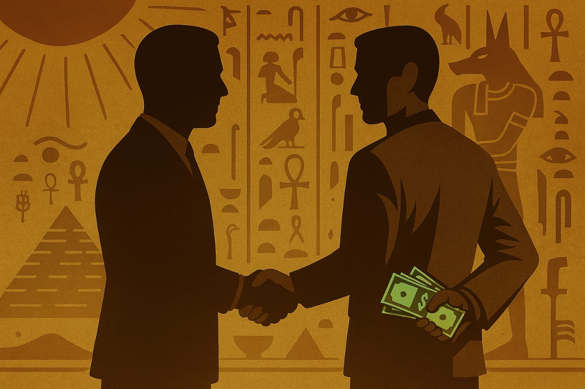

Jika membaca tulisan sebelumnya, “Mediator; Bisnis Eksploitasi”, disebutkan bahwasanya mediator secara umum adalah pihak yang memberangkatkan calon mahasiswa ke Mesir, mereka juga bertanggung jawab atas penyambutan kedatangan mahasiswa, menyediakan syaqqoh (red: flat) untuk dihuni, dan pastinya membantu administrasi mahasiswa di perkuliahan dan sebagainya.
Beberapa pembaca yang teliti telah berkomentar usai membaca tulisan itu: ini tidak seperti opini dalam pembawaanya; opini ini masih terlalu dangkal; dan beberapa mengatakan: apakah tulisan ini belum selesai sehingga meninggalkan pertanyaan di akhir tanpa mencantumkan jawaban.
Membahas masalah seperti ini tentunya tidak bisa asal-asalan. Penulis menyinggung lembaga yang paling berpengaruh di kalangan masisir. Dibutuhkan data yang valid agar tidak terjadi generalisasi kebencian atau tuduhan-tuduhan yang tidak mendasar. Cukup pelik memang, padahal tujuan awal tulisan ini dibuat adalah agar kita sebagai calon mahasiswa lebih selektif dalam memilih.
Kenapa penulis membawakan hal ini?
Kasus ini tentunya memiliki cerita. Bermula saat Universitas Al-Azhar membuka pendaftaran bagi camaba. Puluhan lembaga mulai menawarkan diri mereka sebagai jembatan pendaftaran. Kemenag pun demikian, membuka jalur mereka. Waktu berlalu, sampai saatnya kemenag mengadakan serangkaian tes untuk camaba. Dan finally, hasil tes keluar. Camaba yang lulus langsung mendapatkan kesempatan masing-masing untuk memilih mediator mereka. Sementara yang gagal sebaliknya.
Diantara camaba yang gagal, ada seorang teman penulis. Mimpi dia adalah Mesir. Mimpi dia adalah Universitas Al-Azhar dan belajar di dalamnya. Namun, takdir mengatakan tidak. Karena masih bertekad di situ, ia mendapatkan informasi tentang suatu lembaga yang mampu memberangkatkannya tanpa tes kemenag. Ia pun tertarik. Dia mencoba menghubungi pihak terkait, kemudian mengisi segala hal hingga sampailah di tahap pembayaran. Di sini, ia mulai skeptis. Sebelum membayar, ia mencoba mencari tahu lembaga ini lewat google maps sesuai alamat yang tertera. Dan, what, this league doesn’t even exist on earth. Hanya sebuah pemakaman yang sepi dan sunyi. Dia pun mengurungkan niatnya. Dan alhamdulillah sekarang dia sudah diterima di kampus ternama lainnya.
Berkaca dari kisah tersebut, bisa diambil kesimpulan bahwa adanya pihak yang tidak bertanggung jawab dalam perkara pengurusan camaba Universitas Al-Azhar ini. Ya, memang tentunya tidak bisa dipungkiri hal ini bakal terjadi. Di mana ada kesempatan, tabiat manusia akan mulai beraksi. Apalagi peminat Mesir yang terhitung sangat banyak di luaran sana. Tergiur dengan nikmat belajar langsung di kiblatnya ilmu Islam. Menapaktilasi sejarah dengan melihat langsung ke tempatnya.
Sebuah hal yang patut disyukuri sebenarnya bagi pelajar Universitas Al-Azhar yang sudah sampai di sini. Tidak semua bisa mendapatkannya, belajar dikelilingi ribuan ulama ternama yang sanad ilmunya marfu’. Ya, meskipun realitanya tidak begitu. Sebagian memilih untuk lupa posisi mereka sebagai Azhari.
Kembali ke kasus mediator sebelumnya. Apa hubungan antara ketertarikan calon mahasiswa dengan munculnya pihak-pihak mediator?
Seorang matematikawan bernama John von Neumann (Hungaria-Amerika), mencetuskan sebuah teori yang bernama “Game Theory”. Ia mengemukakan hal ini pada makalahnya di tahun 1928 yang kemudian dikembangkan Oskar Morgenstern dan John Nash. Lalu apa itu Game Theory? Game Theory (Teori Permainan) adalah cabang matematika dalam mempelajari strategi pengambilan keputusan dalam situasi kompetitif dan kooperatif.
Lalu apa korelasinya?
Dalam teori ini dibutuhkan player yang bermain di dalamnya. Anggap saja ada dua pihak, pihak satu adalah mahasiswa yang ingin ke Mesir, dan pihak dua adalah mediator. Selain player, dibutuhkan juga strategi dalam permainan ini. Singkatnya dalam penjelasan berikut:
Player:
- Calon Mahasiswa (CM)
- Mediator (MD)
Strategi:
CM memiliki dua pilihan:
- Mengurus sendiri
- Menggunakan jasa MD
MD memiliki dua pilihan:
- Memberi layanan jujur
- Menipu
Maka hasil yang terjadi adalah:
| MD jujur | MD menipu | |
|---|---|---|
| CM memakai MD |
|
|
| CM urus sendiri |
|
|
Normalnya, seseorang akan memilih hasil yang menguntungkan dua belah pihak (win-win solution). Namun, kejadian tipu-menipu tetap bisa saja terjadi. Dinamika seperti ini wajar adanya, karena sandaran yang dipakai adalah manusia. Tetapi, dalam kurun waktu tertentu akan muncul masalah lagi, yaitu trust issue. Kepercayaan pihak satu akan menurun terhadap pihak kedua. Imbasnya tidak hanya kepada pelaku penipuan saja, melainkan akan menggeneralisasi semua pihak mediator lain. Baik dalam prosesnya dia bersikap jujur maupun tidak.
Lalu bagaimana solusinya? Tentu saja perlindungan berupa hukum yang tegas adalah solusi utama. Pihak mediator seharusnya memiliki sertifikasi atau minimal terdaftar di pihak pemerintahan. Sehingga meminimalisir terjadi kerugian, serta dapat memberikan hukuman bagi pihak yang menipu secara adil.
Kesimpulan di akhir tulisan ini adalah: tentu saja, mimpi kita boleh tinggi, tetapi bagaimana jalur kita meraihnya? Apa kita akan terus dibutakan oleh hal-hal instan saja? Atau malah karena malas usaha, kita ingin melakukan sulap saja? Heheh… lucu kan, ada orang yang ingin bisa jadi pemain bola profesional tapi tidak pernah main bola itu sendiri. Selektif juga penting. Tentu kita tidak mau rugi kan? Tapi ada yang lebih lucu dari itu. Mereka yang sudah mendapatkan mimpinya namun memilih untuk menyia-nyiakannya. Akhirnya ya sama, rugi juga. Intinya, ketika mimpi itu bisa diraih, kesempatan kita tidak akan datang kedua kalinya. Memanfaatkan dengan baik adalah satu-satunya pilihan. Sekian.
← Kembali© 2025 IKADU MESIR. All Rights Reserved.